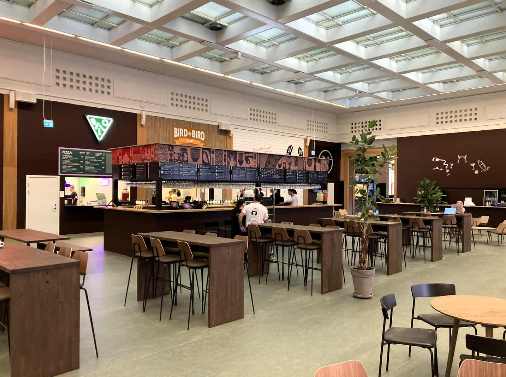
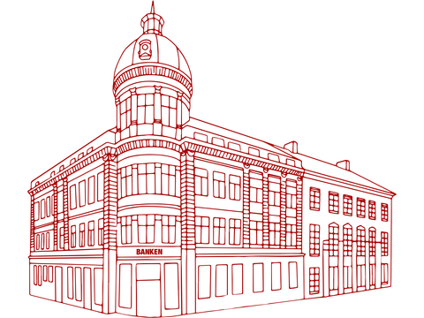
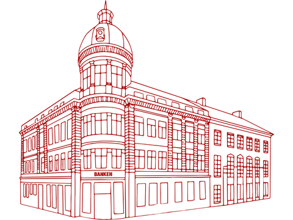

VELKOMMEN I BANKEN
Aarhus’ nye Food Hall
Med indgang fra Strøget og Bispetorv

Banken food hall åbnede d. 20 august 2024, den ligger i en af aarhus’ mest historiske bygninger Wormhus, ved sct. clemens bro, hvor den ligger placeret helt centralt.
Grundet det historiske i bygningen er at - inden lå den gamle bank. Hvilket er derfor det rigtig flot at den nye “banken food hall" har ført værdien videre ind i deres koncept.
Banken Food Hall har et kvadratmeter mål på mere end 3.000 og har et formål med at bibeholde den historiske charme med en food hall ide med den mere moderne oplevelse.
I food hallen er der omkring 10 forskellige slags mad udbydere, med alt fra autentisk thaimad til gourmet burgere. Derudover kan man se over deres sociale medier, at der i fremtiden er planer om at lave regelmæssige arrangementer for at fremvise mere følelsen af fællesskab, som de også prøver at udtrykke gennem deres langborde i hallen.
Banken har plads til omkring 700 spisende gæster. De kører et koncept med, at der ikke er krav om en reservation for at få plads i hallen. Hvilket igen viser deres koncept med fællesskab og at det skal fremstå mere afslappet og indbydende atmosfære.
 
